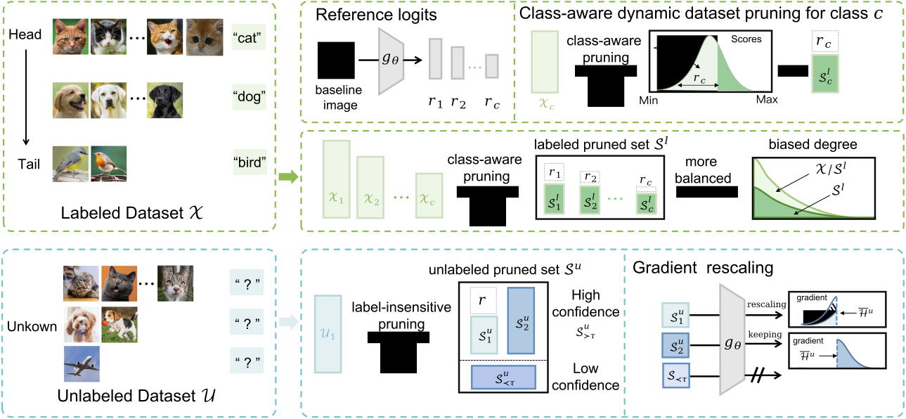
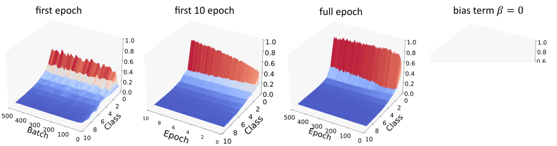
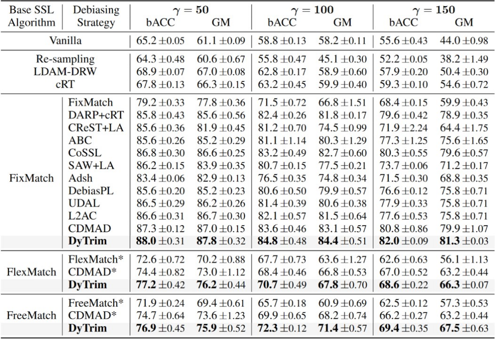
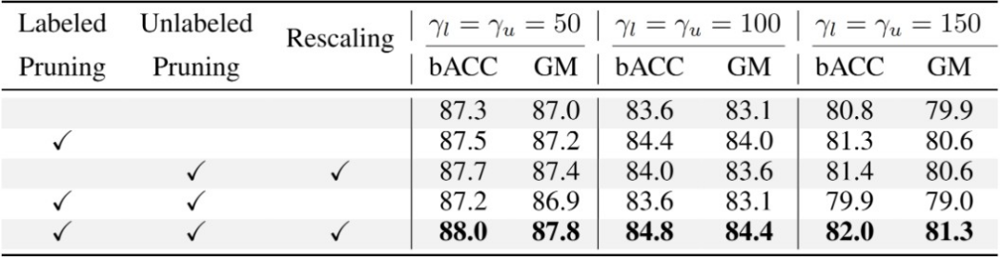
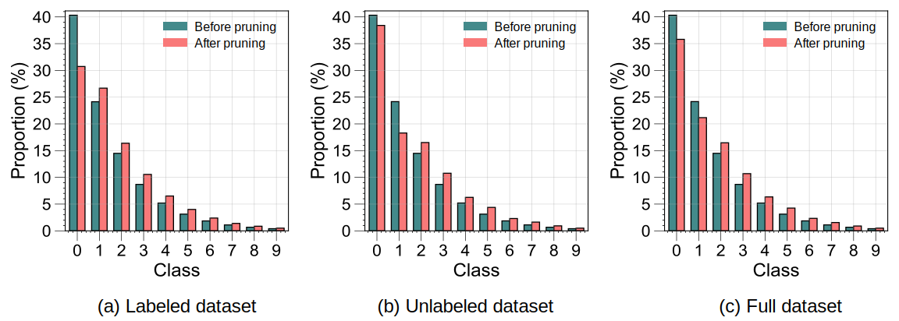

TL;DR: Long-tailed distributions are prevalent in real-world semi-supervised learning (SSL), where pseudo-labels tend to favor majority classes, leading to degraded generalization. While many long-tailed semi-supervised learning (LTSSL) methods have been proposed, the mechanisms by which they implicitly debias logits remain poorly understood. In this work, we revisit LTSSL through the lens of learning dynamics and provide a theoretical characterization of logits debiasing. Specifically, we derive a step-wise decomposition of the logits updates, showing that predictions are dominated by class-imbalance bias that reliably reflects label priors. To expose this effect, we use the logits of a task-irrelevant baseline image as an indicator of accumulated bias and prove that they converge to the class prior. This provides a unified view where LTSSL remedies such as logit adjustment, reweighting, and resampling correspond to reshaping gradient dynamics. Based on this insight, we propose DyTrim, a principle-based dynamic pruning framework that reallocates gradient budget through class-aware pruning on labeled data and confidence-based soft pruning on unlabeled data. We provide theoretical guarantees that DyTrim reduces class bias and improves generalization. Extensive experiments on standard LTSSL benchmarks show consistent gains across architectures and methods.

Contributions
Learning Dynamics Analysis. We analyze long-tailed semi-supervised learning from the perspective of learning dynamics and show that class imbalance induces accumulated logit bias that dominates model predictions.
Baseline Image as Bias Indicator. We introduce a task-irrelevant baseline image and theoretically show that its logits converge to the class prior, providing a direct and interpretable indicator of accumulated class bias.
Unified View of Debiasing Methods. Within this framework, existing debiasing strategies such as logit adjustment, reweighting, and resampling are unified as mechanisms that reshape gradient dynamics to counteract bias accumulation.
Dynamic Dataset Pruning for LTSSL. Based on these insights, we propose DyTrim, a dynamic dataset pruning framework reallocates gradient budget via class-aware pruning on labeled data and confidence-based soft pruning on unlabeled data, outperforming existing state-of-the-art baselines.
Learning Dynamics of Semi-supervised Learning
FixMatch updates parameters using one supervised gradient and one consistency gradient at each step:
\[ \begin{gathered} \Delta \theta \triangleq \theta ^{t+1} - \theta^t = -\eta \cdot \left(\nabla \mathcal{L}_{sup}(f_\theta(\alpha(x_b)), y_b)+\nabla \mathcal{L}_{con}(f_\theta(\alpha(u_b)), f_\theta(\mathcal{A}(u_b))\right); \\ \Delta f(x_o) \triangleq f_{\theta^{t+1}}(x_o)-f_{\theta^{t}}(x_o). \end{gathered} \]
Accordingly, the one-step change of the log-probability at an observation point \(x_o\) decomposes into a supervised influence and a consistency influence:
\[ \Delta \log \pi^{t}(y|x_o) \triangleq \Delta \log \pi_\theta^{t,\mathrm{sup}}(y\mid x_o;x_b) + \Delta \log \pi_\theta^{t,\mathrm{con}}(y\mid x_o;u_b). \]
Each term further factorizes into three interpretable components: an output-sensitivity term \(\mathcal{T}^t(x_o)\), an eNTK coupling kernel \(\mathcal{K}^t(\cdot,\cdot)\), and a gradient signal \(\mathcal{G}^t(\cdot,\cdot)\):
\[ \small{ \begin{gathered} \Delta \log \pi_\theta^{t,\mathrm{sup}}(y\mid x_o;x_b) = -\eta\, \mathcal{T}^t(x_o)\, \mathcal{K}^t(x_o, \alpha(x_b))\, \mathcal{G}_{\mathrm{sup}}^t(\alpha(x_b), y_b) + \mathcal{O}\!\left(\eta^2 \|\nabla_\theta \mathbf{z}(\alpha(x_b))\|_{\text{op}}^2\right)\\ \Delta \log \pi_\theta^{t,\mathrm{con}}(y\mid x_o;u_b) = -\eta\, \mathcal{T}^t(x_o)\, \mathcal{K}^t(x_o, \mathcal{A}(u_b))\, \mathcal{G}_{\mathrm{con}}^t(\mathcal{A}(u_b),\hat q_b^t) + \mathcal{O}\!\left(\eta^2 \|\nabla_\theta \mathbf{z}(\mathcal{A}(u_b))\|_{\text{op}}^2\right). \end{gathered}} \]
This decomposition explains how pseudo-label quality interacts with class imbalance over many steps: correct pseudo-labels reinforce supervised signals, while incorrect pseudo-labels can accumulate into persistent errors; under imbalance, majority-class bias can dominate the dynamics and mask corrective influences.
Learning Dynamics Analysis of Accumulated Bias
Per-step influence alone does not reveal the global effect of imbalance. DyTrim introduces a task-irrelevant baseline image \(\mathcal{I}\) (typically solid color) to isolate and track the model’s accumulated bias state. With affine normalization (e.g., BatchNorm), the logits on a solid-color baseline become invariant to pixel intensity and reduce to normalization bias parameters:
\[ h(\mathcal{I}) = \boldsymbol{b}, \quad \pi_\theta(\mathcal{I}) = \texttt{Softmax}(\boldsymbol{b}). \]
Tracking the baseline distribution over training provides a direct measurement of how class-level bias evolves:
\[ \Delta \log \pi^{t}(y|\mathcal{I}) \triangleq \log \pi_{\theta^{t+1}}(y|\mathcal{I}) - \log \pi_{\theta^{t}}(y|\mathcal{I}). \]
The corresponding one-step influence on the baseline image takes a similar factorized form:
\[ \small{ \Delta \log \pi_\theta^{t}(y\mid \mathcal{I};x) = -\eta\, \mathcal{T}^t(\mathcal{I})\, \mathcal{K}^t(\mathcal{I}, x)\, \mathcal{G}^t(x, y) + \mathcal{O}\!\left(\eta^2 \|\nabla_\theta \mathbf{z}(x)\|_{\text{op}}^2\right).} \]
Since \(\mathcal{I}\) lies far from the data manifold, \(\mathcal{K}^t(\mathcal{I},x)\) is typically small, making \(\pi_\theta(\mathcal{I})\) a clean indicator that reflects global bias rather than semantic content.
As the number of labeled and unlabeled samples from the majority class increases, the output of $\pi^t_{\theta}(\mathcal{I})$ will be progressively squeezed into a biased long-tailed distribution. Even with $\mathcal{G}^t$ guiding the adaptation direction, this process can still be steered by the biased state encoded in $\pi^t_{\theta}(\mathcal{I})$, further amplifying the long-tailed shift, as illustrated in Figure. 
Dynamics Analysis of Logits Debiasing Methods
Under the baseline-image dynamics, different debiasing strategies can be compared by how they reshape the gradient flow. For logits adjustment (LA), the adjusted logits are:
\[ \tilde{\pi}_{\theta}(y|x)=\texttt{Softmax}(\tilde{\mathbf z}(x)),\qquad \tilde{\mathbf z}(x)=g_{\theta}(x)-\lambda\boldsymbol{\phi}. \]
In CDMAD-style implementations, LA is closely related to subtracting a class-prior term derived from the baseline distribution \(\pi=\pi_\theta(\mathcal{I})\), resulting in an influence form with a modified gradient term:
\[ \Delta \log \tilde{\pi}_\theta^{\,t}(y\mid \mathcal I;\,x_b) = -\eta\,\mathcal T^t(\mathcal I)\, \mathcal K^t(\mathcal I,x_b)\, \tilde{\mathcal G}^t_{LA}(x, y) + \mathcal O\!\left(\eta^2\|\nabla_\theta \tilde{\mathbf z}(x_b)\|_{\text{op}}^2\right). \]
Reweighting scales both the coupling kernel and the gradient signal by class-dependent weights, increasing the effective contribution of under-represented classes and attenuating head classes:
\[ \small{ \Delta \log \pi_\theta^{t,rw}(y\mid \mathcal{I};x) = -\eta\, \mathcal{T}^t(\mathcal{I})\, \tilde{\mathcal{K}}^t_{rw}(\mathcal{I}, x; w^c)\, \tilde{\mathcal{G}}_{rw}^t(x, y; w^c) + \mathcal{O}\!\left(\eta^2 \|\nabla_\theta \mathbf{z}(x)\|_{\text{op}}^2\right).} \]
Resampling mitigates imbalance by changing how often each class is drawn, rather than modifying the loss. Let \(\mathbb{P}_{\mathrm{rs}}(x \in c)=r^c\) denote the (possibly normalized) sampling ratio for class \(c\). The per-step update of the baseline log-posterior under resampling becomes:
\[ \small{ \begin{gathered} \Delta \log \pi_\theta^{t,\mathrm{rs}}(y\mid \mathcal{I};x) = -\eta\, \mathcal{T}^t(\mathcal{I}) \,\tilde{\mathcal{K}}^t_{rs}(\mathcal{I}, x; r^c)\, \tilde{\mathcal{G}}_{rs}^t(x, y; r^c) + \mathcal{O}\!\left(\eta^2 \lVert\nabla_\theta \mathbf{z}(x)\rVert_{\mathrm{op}}^2\right), \end{gathered}} \]
DyTrim: A Baseline Image Guided Data Pruning Framework
DyTrim moves debiasing to the data-selection level. Instead of modifying logits or loss, dynamic pruning gates which samples participate in each update via step-dependent scores and thresholds. The pruning mechanism multiplies the gradient signal by a participation mask \(\mathcal{P}_t(x)\), effectively zeroing out kernel–gradient interactions for low-utility samples:
\[ \small{ \begin{gathered} \Delta \log \pi_\theta^{t,\mathrm{prune}}(y\mid \mathcal{I};x) = -\eta\, \mathcal{T}^t(\mathcal{I})\, \mathcal{K}^t(\mathcal{I}, x)\, \tilde{\mathcal{G}}_{dytr}^t(x, y) + \mathcal{O}\!\left(\eta^2 \|\nabla_\theta \mathbf{z}(x)\|_{\text{op}}^2\right)\\ \tilde{\mathcal{G}}_{dytr}^t(x, y) = \mathcal{P}_t(x)\, \mathcal{G}^t(x, y) \end{gathered}} \]
DyTrim uses two complementary pruning rules to handle labeled long-tail and unlabeled distribution mismatch:
- Labeled: class-aware hard pruning. The per-class keep ratio is guided by the baseline distribution \(r_c = \pi_\theta(\mathcal{I})_c\). For class \(c\), DyTrim prunes the \(r_c \times N_c\) smallest-score samples (using supervised loss as the utility score), removing redundant head-class examples.
- Unlabeled: label-insensitive soft pruning. Since unlabeled imbalance and pseudo-label noise are unknown, DyTrim uses a randomized keep rate \(r\), an adaptive score threshold, and a debiased confidence threshold \(\tau\) to suppress low-utility or low-confidence unlabeled updates.
Experimental Results
Results on ResNet backbones. Under the consistent condition where $\gamma_u$ is known and matched to $\gamma_l$, the results show that CISSL algorithms consistently outperform their vanilla SSL counterparts by mitigating class imbalance while effectively exploiting unlabeled data. Among them, the proposed DyTrim achieves the best performance across all imbalance ratios. Compared with the state-of-the-art CDMAD, DyTrim improves bACC by 1.2% and GM by 1.4% on average, without incurring additional computational overhead. Furthermore, when integrated into FlexMatch and FreeMatch, DyTrim yields substantial improvements, boosting bACC/GM by 2--3% on average. 
Results on ViT backbones. On CIFAR-10-LT, DyTrim yields the best results, improving bACC 0.6% over CDMAD and nearly 4% over FixMatch when $\gamma_l = \gamma_u = 100$. Under the inconsistent condition, DyTrim maintains a clear margin, surpassing CDMAD almost 2%. On CIFAR-100-LT, although the absolute accuracies are lower due to the increased difficulty, DyTrim still matches or slightly improves upon CDMAD, while consistently outperforming FixMatch.

Further Analysis
Effectiveness of each component. We conducted ablation studies on CIFAR-10-LT to assess the contribution of each component in DyTrim, varying the hyperparameter $\gamma = \gamma_l = \gamma_u$ across 50, 100, and 150. As shown in Table, the best performance was achieved when both labeled and unlabeled pruning were combined with rescaling. Removing rescaling led to a bACC drop of 0.8–2.1 points across $\gamma$ values. Excluding either pruning component also reduced performance (e.g., -0.5 and -0.3 at $\gamma=50$ without unlabeled or labeled pruning, respectively). Removing both pruning strategies resulted in the most significant degradation. These results highlighted the complementary benefits of pruning and rescaling. 
Comparison of class distributions before and after pruning. Figure compares the class distributions before and after applying DyTrim on the labeled, unlabeled and full training sets. Across all three subsets, pruning consistently reduces the proportion of head classes while preserving or slightly increasing the relative proportion of tail classes. This produces a noticeably flatter long-tailed distribution. Unlike traditional pruning methods, which typically remove samples that contribute least to training progress, the behavior of DyTrim is different because the pruning decision is guided by baseline logits and the reliability of pseudo-labels. This tends to eliminate redundant head-class samples and low-quality unlabeled samples while rarely discarding the already scarce tail-class data. Consequently, the resulting effective training subset becomes more balanced without sacrificing essential information from tail classes. 
Conclusion
-
In this work, we provide a theoretical characterization of class bias in long-tailed semi-supervised learning (LTSSL) through an in-depth analysis of the learning dynamics. We derive a step-wise decomposition of logit updates, demonstrating how class imbalance dominates predictions and how debiasing methods, such as logit adjustment, reweighting, and resampling. Our theoretical insights bridge the gap between existing methods and their effect on gradient dynamics, highlighting the critical role of sample-level interventions. Based on this foundation, we introduce DyTrim, a dynamic pruning framework that mitigates class imbalance by reallocating gradient budgets. Empirical results across multiple benchmarks and SSL methods demonstrate that DyTrim consistently improves performance.
BibTeX
@inproceedings{cheng2026dytrim,
title = {Learning Dynamics of Logits Debiasing for Long-Tailed Semi-Supervised Learning},
author = {Cheng, Yue and Zhang, Jiajun and Gao, Xiaohui and Xing, Weiwei and Zhu, Zhanxing},
booktitle = {International Conference on Learning Representations},
year = {2026}
}